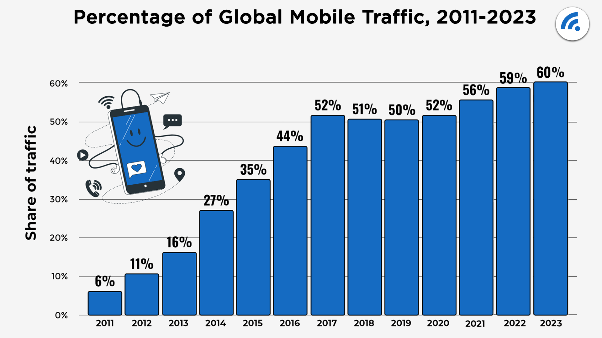

Primitive technology often involved the use of stone tools, which were made by shaping and flaking stones into a suitable shape.
These tools were used for a variety of tasks, including cutting, chopping, pounding, and scraping. Stone was used for making a variety of tools, including axes, hammers, knives, and arrowheads.
Another important aspect of primitive technology was the creation of fire. Fire was used for cooking, providing light, and keeping animals at bay. The ability to make fire was very important for early humans, and there were many ways to light fires, including using sticks, stones, and fire drills.
Primitive technology also involved the making of clothes and shelters. For example, animal skins were used to create clothing, and animal hides were used to create shoes and hats. Shelter was often made by building a structure from materials found in nature, such as branches, stones, and vines.
Overall, primitive technology was a crucial part of human survival in early history. These techniques allowed humans to live off the land and adapt to their environment, and helped shape the way we live today.
During the 20th century, there was a tremendous advancement in technology that changed the course of human history. The development of computers, the internet, mobile devices, and other technological advancements have had a significant impact on how we communicate, work, shop, and entertain ourselves. In recent years, artificial intelligence and machine learning have become a huge part of our everyday lives, with virtual assistants, self-driving cars, and various other applications. With all these advancements, it is clear that technology has completely transformed the way we live and work. However, it's important to remember that these advancements also come with risks and challenges, so it's essential to approach technology carefully and responsibly.
There are many differences between technology in the past and technology today. Some of the most notable differences are:
Scale: Technology today is much more widespread and accessible than it was in the past. In the past, technology was often limited to a few individuals or organizations, whereas today, technology is ubiquitous.
Complexity: Technology today is much more complex than it was in the past. Modern technology relies on advanced algorithms, advanced materials, and sophisticated manufacturing processes that did not exist in the past.
Speed: Technology today is much faster than it was in the past. For example, computers today can perform computations much faster than computers in the past.
Connectivity: Technology today is much more interconnected than it was in the past. Today, we have the internet, which allows us to connect to people and information from anywhere in the world.
Impact: Today's technology has had a much greater impact on our lives than past technology. For example, the internet has transformed the way we communicate, work, and spend our free time.
Technology has advanced at an incredible pace since 2011, and this advancement has impacted almost every aspect of our lives. Some of the most notable advancements include: Mobile Technology: Mobile phones have become an essential part of our lives, and modern smartphones are capable of performing a wide range of tasks, such as photography, video recording, web browsing, messaging, and more. They have also become much more advanced, with features such as facial recognition, touchless payment systems, and AI integration. Cloud Computing: Cloud computing has become a mainstream technology, and many organizations now rely on cloud-based services for storage, backup, and computational processing. This has made it much easier to store and access large amounts of data remotely. Artificial Intelligence: AI has been one of the most exciting developments in recent years, with new applications being developed every day. AI is revolutionizing industries such as medicine, transportation, and finance, and it is also becoming more integrated into our daily lives through virtual assistants, recommendation systems, and other tools. Internet of Things: The internet of things (IoT) is a network of devices, vehicles, and home appliances that are equipped with sensors, software, and other technologies to enable communication and data exchange. This has enabled devices to communicate with each other and has revolutionized industries such as manufacturing, agriculture, and healthcare.